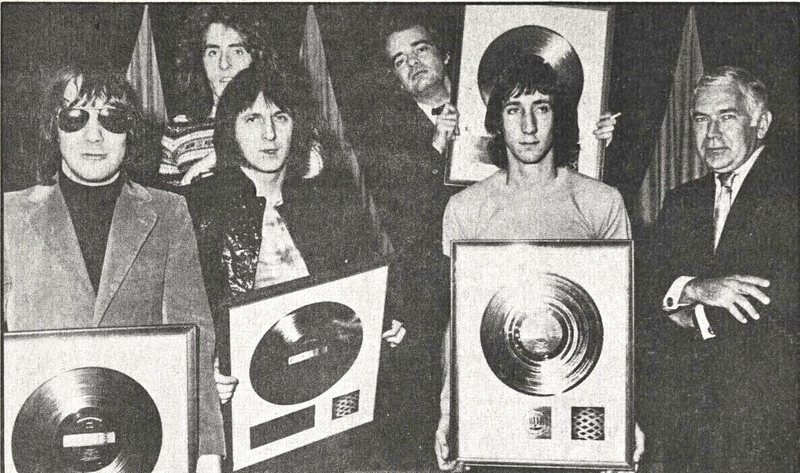

The Who built a career out of feedback, chaos, and smashed guitars.
By the end of the 1960s they had turned that chaos into the rock opera.
They redefined what a British rock band could do on stage.

Table of Contents
- From The Detours to The Who
- The Guitar Smash That Started It All
- My Generation and the Rock Opera Era
- The End of an Era
- FAQ
From The Detours to The Who
Roger Daltrey started the band that became The Who in 1959.
He was still at school in Acton, West London.
He called the group the Detours and played guitar before switching to lead vocals.
Daltrey recruited bassist John Entwistle in 1961.
Entwistle brought in his friend Pete Townshend on guitar that same year.
Drummer Keith Moon joined in April 1964 after turning up uninvited at a gig.
He played louder than anyone already on stage.
Moon had been drumming part time in a band called the Beachcombers and wanted to go professional.
A Mod Band Built by Its Managers
Early manager Peter Meaden renamed the group the High Numbers in 1964.
He dressed them as mods, chasing the youth scene built around scooters and rhythm and blues.
New managers Kit Lambert and Chris Stamp took over later that year.
They pushed the band back toward a name Townshend's roommate Richard Barnes had suggested earlier.
The Guitar Smash That Started It All
The band's early gigs built a reputation for volume and mess as much as songs.
In June 1964, Townshend accidentally broke his guitar's headstock on a low stage ceiling.
The venue was the Railway Hotel in Harrow.
When the crowd laughed at the accident, he smashed the rest of the guitar out of anger.
The following week, Moon kicked over his drum kit to match the moment.
Instrument destruction became part of the act.
Critics later called it auto-destructive art.
It turned into one of the most imitated stunts in rock history.
An Even Bigger Explosion on American TV
By September 1967, Moon had started packing a small explosive charge into his bass drum.
It went off during the finale.
For a taping of "The Smothers Brothers Comedy Hour" that month, he loaded in several times the usual amount.
The blast singed Townshend's hair and left shrapnel in Moon's arm.
It briefly knocked the broadcast off the air.
Townshend later said the explosion marked the real start of his lifelong hearing damage.
Footage of the segment still circulates as one of the wildest moments in live television history.
My Generation and the Rock Opera Era
The band released "My Generation" in October 1965, built around a vocal stutter.
Daltrey's delivery was defiant.
It became their highest charting UK single, reaching number two.
The line "hope I die before I get old" turned into a generational slogan.
Townshend always said he meant it as a mood, not a literal wish.
Townshend borrowed his trademark windmill guitar strum from watching Keith Richards warm up backstage before a Rolling Stones show.
He then made the move his own.
In May 1969 the band released "Tommy," a rock opera about a deaf, dumb, and blind boy.
It sold 200,000 copies in the United States within two weeks.
At Woodstock that August, Townshend kicked Yippie activist Abbie Hoffman off the stage.
Hoffman had interrupted their dawn performance of the album.
Live at Leeds and Who's Next
A concert recorded on February 14, 1970 became the album "Live at Leeds."
Critics still rank it as one of the best live rock records ever made.
"Who's Next" followed in August 1971, topping the UK chart.
It introduced early synthesizers on "Baba O'Riley" and "Won't Get Fooled Again."
The End of an Era
1973's "Quadrophenia" revisited the mod scene that shaped the band's earliest fans.
It was told through a fractured teenage narrator.
Keith Moon died on September 6, 1978, after taking 32 tablets of a sedative prescribed for his alcohol withdrawal.
He was found dead the next morning.
His death ended the classic four-piece lineup that had defined the group for fourteen years.
After Moon and Entwistle
Drummer Kenney Jones joined that November.
The band kept recording and touring through a 1983 breakup and a 1989 reunion tour.
Bassist John Entwistle died of a cocaine-related heart attack in a Las Vegas hotel room on June 27, 2002.
It was the night before a new US tour was set to begin.
The Who was inducted into the Rock and Roll Hall of Fame in 1990.
Daltrey and Townshend kept the band going afterward with supporting musicians.
They released "Endless Wire" in 2006 and "Who" in 2019 before launching a farewell tour in 2025.
FAQ
Who were the original members of The Who?
Roger Daltrey, Pete Townshend, John Entwistle, and Keith Moon made up the classic lineup.
They played together from 1964 until Moon's death in 1978.
Why did The Who smash their instruments?
It started by accident in June 1964 when Townshend broke his guitar's headstock on a low stage ceiling.
He smashed the rest of it out of anger when the crowd laughed.
Moon kicked over his drums the following week, and the destruction became a regular part of the show.
What does "hope I die before I get old" mean in My Generation?
Townshend wrote the line for the 1965 single as a statement of youthful defiance against the older establishment, not a literal wish.
He said for decades that the mood, not the words, was the point.
When did Keith Moon die?
Moon died on September 6, 1978, after taking 32 tablets of a sedative prescribed for his alcohol withdrawal.
He was found dead the next morning.
Is The Who still together?
Roger Daltrey and Pete Townshend, the two surviving original members, kept performing and recording with supporting musicians for decades.
They launched a farewell tour in 2025.
The Who turned onstage chaos into some of rock's most ambitious records.
That arc ran from a smashed guitar in 1964 to a rock opera five years later.
Their story sits alongside British Invasion peers like The Kinks.
The Kinks built a very different sound out of the same mid-1960s London scene.
Back to the 1960smusic.net homepage to explore every genre of the decade, starting with The Who's guitar-smashing arrival.